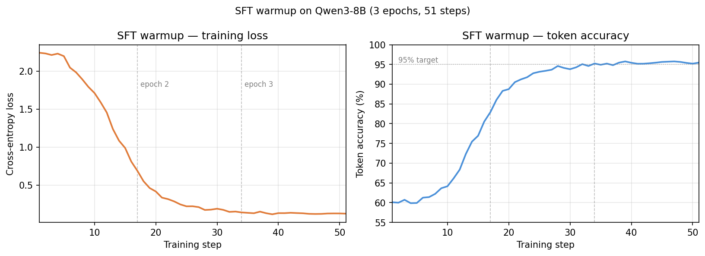
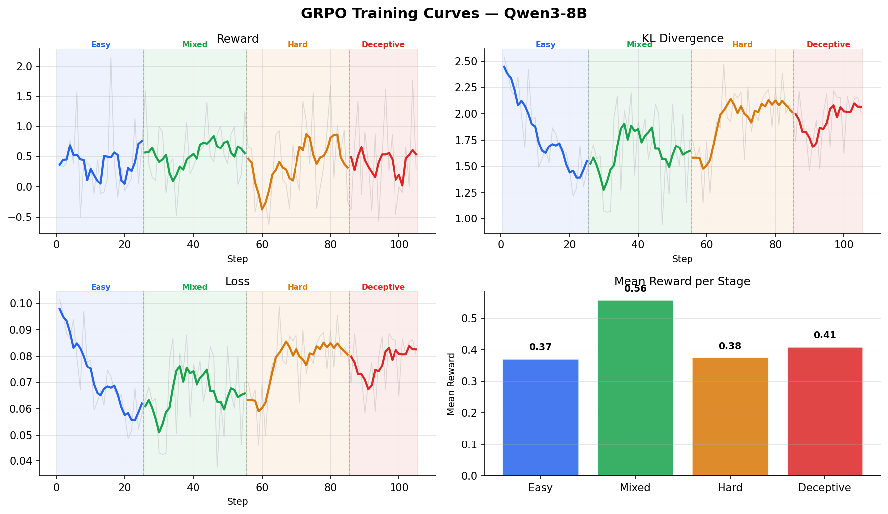
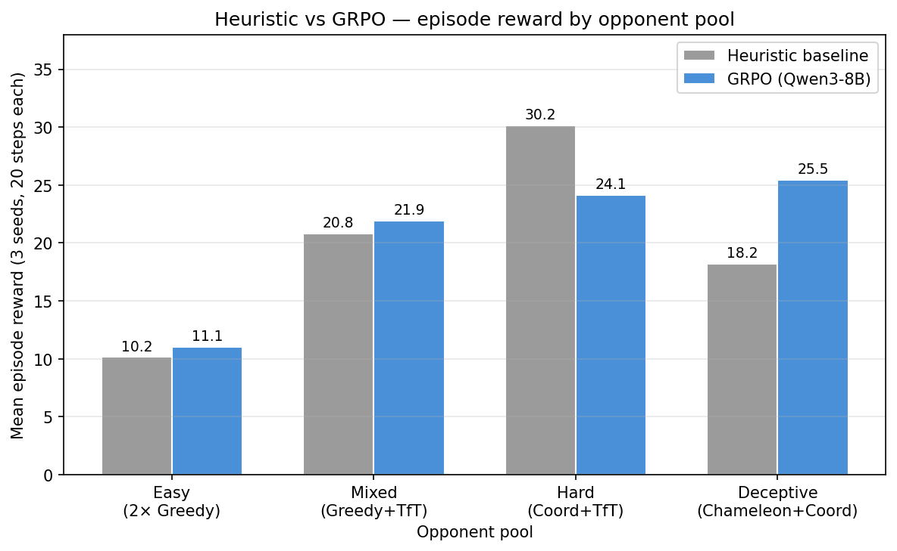

Rehan Ganapathy · April 2026 · OpenEnv × Hugging Face India Hackathon
For the past year or so we've been sold the idea of agents acting on our behalf — doing our chores, making payments, booking our travel. But like every system before it, the moment agents transact in the open they'll meet adversarial players trying to pull a fast one. That's not an edge case; it's the default condition of human social life, which is a continuous stream of multi-objective, context-dependent negotiations against players whose goals you can't see.
Most multi-agent RL benchmarks reward simple optimization: collect the most coins, win the most games, maximize a single scalar. Real strategic behavior — negotiation, coalition-forming, social maneuvering — is different in three concrete ways. Agents have private objectives they don't announce. They send cheap-talk signals that may or may not reflect intent. And the same action carries different meaning depending on world state (cooperating at the office in a boom is not the same move as cooperating there in a crisis).
I wanted a small, reproducible world where hidden motives, adversarial opponents, and macro-economic shocks are load-bearing features rather than noise to average away — and then to see how far an 8B model could get on it with a two-phase SFT → GRPO pipeline run entirely on Hugging Face Jobs.
The result is SpeedRun: the Hidden-Motives Social Environment (HMNE). This post is an honest account — including where the results are robust, where they aren't, and what the training objective can and can't actually teach.
SpeedRun is a 3-agent, 20-timestep social environment with a text-action interface, served as a FastAPI server compatible with the OpenEnv protocol. The learner is an LLM; the other two are scripted opponents drawn from a pool.
Each step, the learner submits a structured text action:
<action>{"location": "office", "strategy": "cooperate", "offer": 2, "signal": "trade"}</action>
Four locations (office, home, gym, social) each have distinct payoff structures across three reward dimensions:
money, health, and social_capital. The learner has private preference weights over these
dimensions, sampled from a Dirichlet at every reset — and so do the opponents, who never reveal them. Utility is
dot(private_weights, reward_vector), so the same physical outcome is worth different amounts to
different agents.
Payoffs are deliberately non-trivial. At the office, mutual cooperation pays (+5, −1, +1) per agent, but a defector against a cooperator walks away with (+8, −2, −2) while punishing the other. At the social location it inverts: cooperation yields (−1, 0, +5), nearly worthless to a money-focused agent but decisive for one scoring social capital.
On top of this, the world runs a Markov chain over three macro-states:
Six named event cards (Layoff Rumors, Market Rally, Community Festival, …) can activate mid-episode, each reshaping location-specific payoffs and leaking a noisy private signal visible only to the learner — a thin information asymmetry the policy can try to exploit.
A token economy sits on top: each agent starts with 10 tokens, can attach an offer to each action,
and tokens split among co-located cooperators. Unspent tokens convert to utility at episode end (×0.3). One
mechanic, three emergent uses — bribery, reciprocity, and costly-signal commitment — with no special-casing in
the policy.
Every step, the agent submits exactly one structured action:
<action>{"location": "...", "strategy": "...", "offer": N, "signal": "..."}</action>Four independent dimensions, each with a distinct strategic purpose.
| Location | Character |
|---|---|
office | High money upside. Mutual coop pays (+5,−1,+1); defection pays (+8,−2,−2). Best during BOOM. Access can be blocked during CRISIS. |
home | Safe retreat. Solo reward (0,+2,−1) — health regardless of opponents. Useful for recovering tokens and trust. |
gym | Solo grind. Strong solo health (0,+3,−1) independent of co-location. Low social upside but immune to defection. |
social | Social-capital hot-spot. Coop pays (−1,0,+5); defection punishes both sides heavily. Best during CRISIS. |
Location choice is the loudest signal of intent — opponents track your visit history and form behavioral models from it. Going somewhere unexpected is itself information.
| Strategy | Effect |
|---|---|
cooperate | Higher joint payoff when mutual. Builds trust (+0.06/step). Required to receive token offers. |
defect | Extracts value unilaterally when opponent cooperates. Erodes trust (−0.10 to −0.20/step). Triggers TitForTat retaliation; read as exploitability by GreedyMoney. |
Strategy only changes payoffs when you share a location with another agent. Go somewhere alone and it has no payoff effect — but it still moves trust scores, because opponent strategies are observed whenever co-located.
Tokens are the costly-commitment mechanism. When you attach offer=N and cooperate, that N is split
among co-located opponents who also cooperated; defectors get nothing; if nobody cooperates you keep your tokens.
Strategic uses:
Unspent tokens convert to utility at episode end (×0.3), so hoarding is a valid late-game play — just not a reputation-building one.
| Signal | Meaning and effect |
|---|---|
none | Silent. No information leaked, no consistency penalty. Best when your true strategy would contradict any honest signal. |
help | Cooperative intent. Softens TitForTat's retaliation; makes Coordinator more likely to meet you. Incurs −0.1 if you defect this step. |
trade | Willingness to exchange. Cooperative, but GreedyMoney reads it as exploitability and raises its defect probability. Same −0.1 if you defect. |
back-off | Warning / withdrawal. Triggers defensive defection in TitForTat; suppresses Coordinator following. No consistency penalty — you can defect freely after it. |
Signals are public — every agent sees every signal every step. The consistency penalty (−0.1 for help/trade then defect) is small enough to ignore occasionally but adds up over 20 steps. Crucially, an always-help-always-defect policy doesn't just eat the penalty; it telegraphs itself to TitForTat and Coordinator. (Whether the optimizer can actually exploit that telegraphing is a subtler question — I come back to it in the reward section.)
The space is 4 × 2 × (up to 11 offers) × 4 ≈ 350 distinct actions per step, capped by token balance. The
interesting property is that the optimal action is never stable: it depends on who is co-located, the
macro-context, any active event card, your private weights, and accumulated trust. The same
office + cooperate + offer=2 + signal=trade is excellent against TitForTat in a BOOM, mediocre in
NORMAL, and nearly irrelevant in a CRISIS where money collapses to ×0.3.
Four archetypes, deployed across five curriculum pools:
trade signal as
exploitability.help signal.The deceptive pool pairs Chameleon with Coordinator. It's where the most interesting separation shows up — and, as you'll see, the only result I'd defend without an asterisk.
Seven components, all capped at zero except utility:
| Component | Purpose |
|---|---|
r_format | Valid <action>...</action> tag |
r_validity | JSON parses, location/strategy valid |
r_access | Didn't visit a blocked location |
r_utility | dot(private_weights, modulated_payoffs) × 0.4 |
r_antihack | −2 for prompt-injection patterns |
r_risk | −0.05 × var(utility[-5:]) after step 5 |
r_signal_consistency | −0.1 for signaling help/trade while defecting |
The penalty-only framing on the compliance terms is deliberate: compliance only gets you to zero; only
r_utility drives positive reward. r_risk discourages strategy whiplash;
r_signal_consistency puts a real (small) cost on lying with cheap talk.
One design choice deserves to be stated plainly, because it shapes everything downstream: the GRPO reward
is single-step. For each generated completion the trainer replays the environment to the exact prompt
state and takes one env step, returning that step's combined reward
(hmne/grpo_data.py::evaluate_completion). The advantage inside each GRPO group therefore reflects
only the immediate next-step utility difference between completions.
That has an honest and important consequence. The two mechanics I'm proudest of — the public cheap-talk channel
and the trust/reputation system — pay off downstream: a help signal changes how Coordinator
behaves next step; betrayal lowers trust and costs you a coalition later. A one-step reward
never sees those steps. So from the optimizer's point of view, the only thing it can directly learn about
signaling is the −0.1 consistency shaping — not the strategic value of honest signaling. The multi-step
reasoning in SpeedRun is supplied by two other places: the SFT teacher's 3-step lookahead and
the curriculum, not the RL gradient. I think that's a more interesting story than pretending the
gradient does it all, and it points straight at the most valuable next experiment (trajectory returns — see
Limitations).
Phase 1 — Rollout-Search SFT. Rather than hand-labeling demonstrations, I built a search
teacher: for each training state, enumerate all valid (location × strategy × offer) candidates, simulate 3 steps
forward through a copy of the environment with a heuristic continuation agent (γ=0.95), and take the
highest-scoring candidate as the label. A deterministic rule then assigns a consistency-preserving signal (never
help/trade while defecting). This produced ~270 examples spanning all pools, contexts,
event cards, and access shocks.
I trained Qwen3-8B with a rank-16 LoRA adapter using Unsloth + TRL's SFTTrainer (4-bit, 3 epochs). Loss dropped 2.24 → 0.12 over 51 steps; token accuracy reached 95.5% by step 34 — past the 95% bar I set before letting GRPO start.

Phase 2 — Curriculum GRPO. Starting from the SFT adapter, four sequential GRPO stages, each with a fresh prompt dataset from a progressively harder pool:
| Stage | Pool | Steps |
|---|---|---|
| 1 | easy (2× GreedyMoney) | 25 |
| 2 | mixed (Greedy + TitForTat) | 30 |
| 3 | hard (Coordinator + TitForTat) | 30 |
| 4 | deceptive (Chameleon + Coordinator) | 20 |
The reward replays the environment from a captured (episode_seed, prefix_actions) state for each
completion, with a hard prompt-equality check — so the training signal is grounded in exact prompt-state
correspondence, not an approximation. A useful invariant falls out of this: because the env is rebuilt
deterministically per completion, all 8 group samples face identical opponent moves, so the group advantage
isolates the learner's own one-step payoff. Clean credit assignment — for a one-step objective.
Infrastructure. GRPO ran on Hugging Face Jobs (H200, 141 GB). The launchers package
hmne/, base64-encode it with the entrypoint, and reconstruct everything inside the container — no
Docker builds, no registry pushes. On the H200 each step ran in ~10s (vs ~125s on an A10G), completing all 105
steps across four stages in under 25 minutes; total wall time including SFT was under 45 minutes.
The most informative signal is how reward evolves within each stage — not the global mean, which is compressed by the behavior reset at each stage transition.
| Stage | First-half mean | Second-half mean | Δ | Zero-grad steps |
|---|---|---|---|---|
| easy | 0.397 | 0.351 | −0.046 | 40% |
| mixed | 0.438 | 0.679 | +0.241 | 27% |
| hard | 0.134 | 0.620 | +0.486 | 30% |
| deceptive | 0.330 | 0.490 | +0.159 | 20% |
Easy shows no within-stage improvement, for a defensible reason: SFT already solved GreedyMoney, the policy collapses to near-deterministic behavior immediately, and 40% of steps have zero reward variance across all 8 generations. No variance, no gradient — a ceiling effect, not a failure.
Hard is the most striking on the training side: mean reward climbs 0.13 → 0.62 within 30 steps,
with the highest reward_std of any stage (0.425) — the policy is genuinely exploring, not converging
prematurely. (Hold that thought; the eval picture for hard is messier, and I'll be honest about why
below.)
KL stayed in the 1.5–2.0 band throughout, no stage diverged, grad-norm spikes (up to ~17) were occasional rather than systematic.

I evaluated the heuristic baseline and the GRPO adapter head-to-head with paired seeds (same
episode_seed per policy), 20 steps, on each pool. The adapter decodes greedily
(do_sample=False), so its rollouts are deterministic. Here is the summary table — and then the part
that matters more, the per-seed spread underneath it.
| Pool | Heuristic | GRPO | Δ |
|---|---|---|---|
| easy | 10.15 | 11.05 | +8.9% |
| mixed | 20.80 | 21.91 | +5.3% |
| hard | 30.17 | 24.13 | −19.9% |
| deceptive | 18.19 | 25.47 | +40.0% |
means over 3 seeds: 3407, 3408, 3409
With n = 3 seeds, those percentages are not trustworthy on their own, and I don't want to present them as if they were. Here is the same data unrolled per seed:
seed 3407 3408 3409 │ verdict
easy heur 0.81 16.75 12.90 │ GRPO wins 2/3, huge spread
GRPO 2.38 13.53 17.24 │
mixed heur 6.88 31.92 23.62 │ GRPO wins 2/3
GRPO 12.89 28.69 24.15 │
hard heur 43.05 23.60 23.85 │ one heuristic-lucky seed
GRPO 22.49 21.56 28.34 │ drives the whole "regression"
deceptive heur 18.76 16.63 19.18 │ GRPO dominates ALL 3 seeds
GRPO 21.51 24.98 29.92 │ (min 21.5 > max 18.8)Three honest readings:
The per-component breakdown supports reading (1) as utility, not just compliance: on deceptive the GRPO adapter
extracts more r_utility per step than the heuristic and posts a smaller (less negative)
r_risk, i.e. it scores higher and more stably. The compliance terms
(r_format/r_validity/r_access) are ≈0 for both policies post-SFT, so
they're not where the difference lives.

I'd rather a reader leave knowing exactly how much weight each claim can bear.
None of these sink the project — they scope it. SpeedRun is a genuinely rich environment with one clean, seed-robust positive result and a clear, honest path to a stronger one.
SpeedRun is a small, reproducible test bed for questions that recur in social-simulation and multi-agent research:
As LLMs get deployed to negotiate resources, schedule, and form coalitions, we need benchmarks that stress strategic behavior under private information and adversarial co-players. SpeedRun is a small step toward that — and, I hope, an example of reporting such results with the error bars attached.
The environment, trained adapters, and full source are open on the Hub. If you want to run your own agent against
the Chameleon, the OpenEnv server is one make serve away.